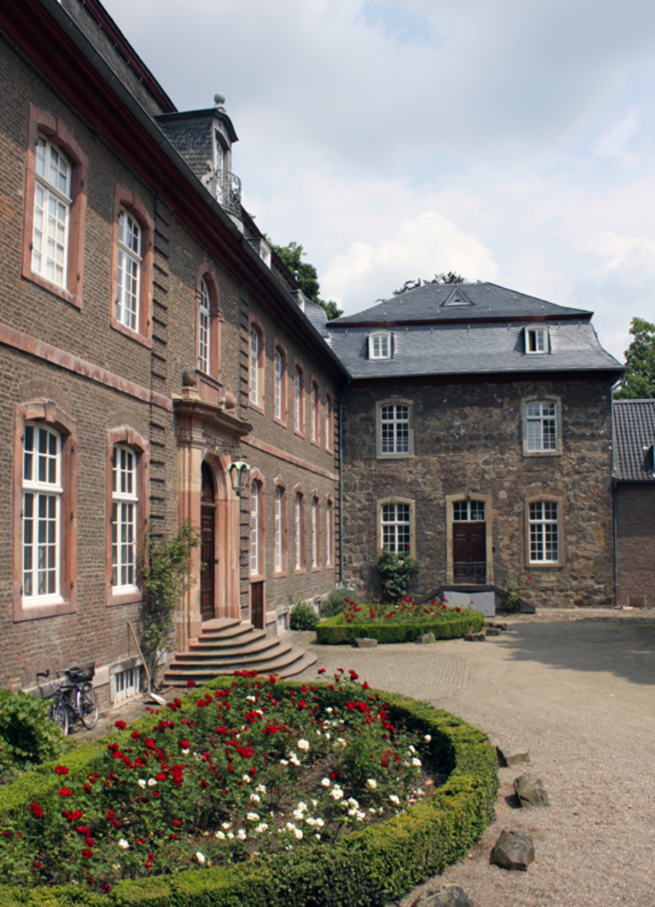
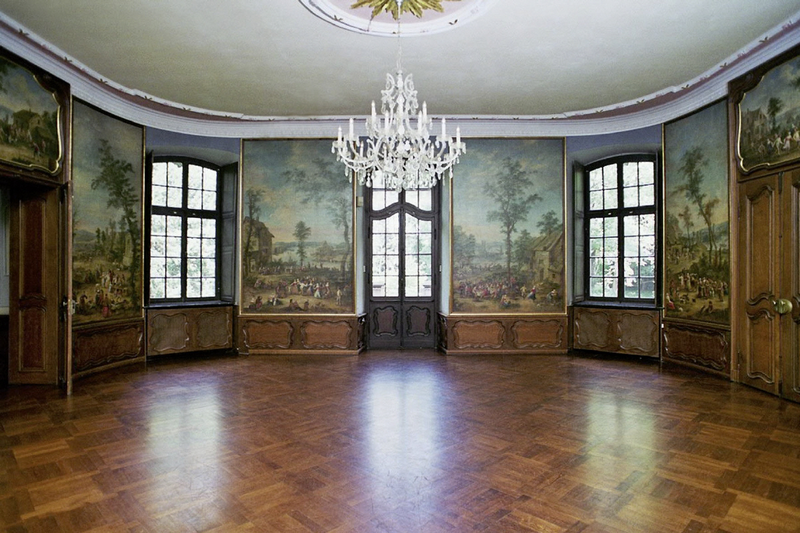
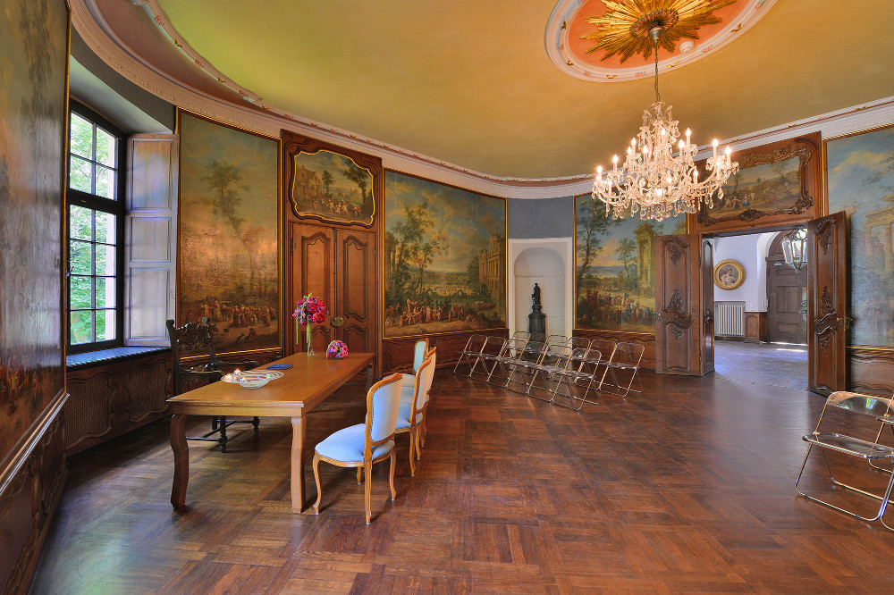

Sitzung 11: Digitalisierung der Theaterwissenschaftlichen Sammlung im Schloss Wahn
Einleitung: In dieser Sitzung besuchten wir die Theaterwissenschaftliche Sammlung im Schloss Wahn. Dort lernten wir, wie historische Theaterobjekte gesammelt, dokumentiert und digitalisiert werden. Ziel der Digitalisierung ist es, das kulturelle Erbe zu bewahren und gleichzeitig den Zugang für Forschung und Lehre zu erleichtern.
Theaterwissenschaftliche Sammlung
Die Theaterwissenschaftliche Sammlung ist eine Sammlung zur Theatergeschichte im deutschsprachigen
Raum.Dort werden viele historische Objekte
aufbewahrt, zum Beispiel:
- Bühnenbildentwürfe
- Theaterfotografien
- Manuskripte
- Theatermasken
- Kostüme
- Plakate und Programmhefte
- Puppentheater
- Historische Bücher und Archive
Weiterführender Link: Theaterwissenschaftliche Sammlung der Universität zu Köln
Digitalisierung der Sammlung
Viele Theaterobjekte sind alt und empfindlich. Deshalb werden sie digitalisiert. Digitale Kopien schützen die Originale vor häufigem Benutzen und machen die Materialien auch online verfügbar. So können Forschende und Studierende auf die Informationen zugreifen, ohne die Originale zu beschädigen.
Bedeutung für Forschung und Lehre
Die Sammlung ist nicht nur ein Archiv, sondern auch eine wichtige Forschungs- und Lehrsammlung. Historische Objekte können untersucht, verglichen und für wissenschaftliche Projekte genutzt werden. Durch die Digitalisierung können mehr Menschen auf diese Materialien zugreifen.
Fazit
Die Exkursion zeigte, dass Digitalisierung und Originale sich ergänzen. Digitale Kopien erleichtern den Zugang und schützen empfindliche Objekte. Gleichzeitig bleiben die Originale als Teil des kulturellen Erbes weiterhin unverzichtbar.
Impressionen aus Schloss Wahn



Bildquellen: Öffentlich zugängliche Internetquellen.